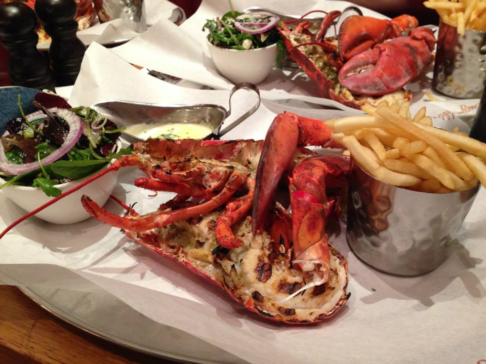

위치
런던(London)은 잉글랜드와 영국의 수도이자 최대 도시이다. 인구는 2014년을 기준으로 약 8,538,689명으로 영국은 물론 유럽 전체 대도시권 중 가장 큰 권역이다. 런던은 템스 강을 기반으로 2,000년 동안 발전해 왔으며 역사는 로마인들이 론디니움이라는 요새를 지은 것부터 시작되었다. 시티 오브 런던은 고대 시대부터 런던의 핵심 지역인데, 크기는 1.12-마일(2.9 km2)로 중세 시대부터 변하지 않고 있으며 2011년을 기준으로 7,375명이 거주하고 있는 잉글랜드에서 가장 작은 도시이다. 적어도 19세기부터 "런던"이라는 용어는 주변 도시를 중심으로 개발된 대도시를 뜻했다. 이러한 광역 도시권의 대부분은 런던 지역과 그레이터 런던으로, 런던 시장과 런던 의회에서 통치한다.
런던은 지리학적으로도 중요한데 본초 자오선, 즉 경도 0도선이 지나는 곳으로 협정 세계시의 기준선이 된다.
여행명소
타워브릿지
빅벤
더 샤드

해리포터 스튜디오

음식
피쉬 앤 칩스
영국하면 생각나는 피쉬 앤 칩스. 걍 생선튀김에 감자튀김이니 전형적인 영국음식은 믿고 거르자ㅎㅎ
버거 앤 랍스타
피쉬 앤 칩스와는 다르게 꿀맛. 꼭 들러서 먹어보자.